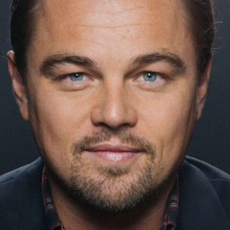
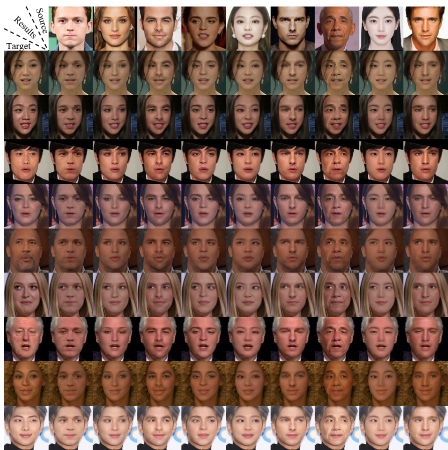

A Lightweight One-Stage Framework for Fast and Realistic Face Swapping
Anonymous Authors


Abstract
Recent face swapping frameworks have achieved high-fidelity results. However, the previous works suffer from high computation costs due to the deep structure and the use of off-the-shelf networks. To overcome such problems and achieve real-time face swapping, we propose a lightweight one-stage framework FastSwap. We design a shallow network trained in a self-supervised manner without any manual annotations. The core of our framework is a novel decoder block, called Triple Adaptive Normalization (TAN) block, which effectively integrates the identity and pose information. Besides, we propose a novel data augmentation and switch-test strategy to extract the attributes from the target image, which further enables controllable attribute editing. Extensive experiments on VoxCeleb2 and wild faces demonstrate that our framework generates high-fidelity face swapping results in 123.22 FPS and better preserves the identity, pose, and attributes than other state-of-the-art methods. Furthermore, we conduct an in-depth study to demonstrate the effectiveness of our proposal. Refer to our project webpage to make your own face swapping results and view additional results.
Additional Results
Qualitative results

Switch-Test results
Do It Yourself 😜
Use the FastSwap to create your own creative and fun contents!
Please visit our FastSwap demo.
Publication
Submitted to WACV 2023